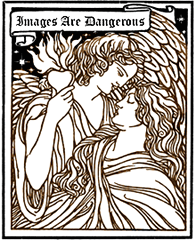

 Love Like an Enemy I dreamed I fell in love with my teacher. She was left-handed, like all the geniuses I've known. I loved to sit in her office with nine dark windows and pretend we were the same person.
She trained me to baby-talk in a once-dead language that made me see her face was very beautiful. I'd watch her soft lips as I disclosed myself in a trance, trying to remember the big sin of childhood she said had not yet completely decayed in me. Her eyes were sometimes grey and sometimes invisible. Her sweat made me nervous. I wanted to believe she was smarter than me, that she'd find virginal songs in me that I wasn't allowed to discover myself.
For once in my life, thanks to her dangerous listening, I felt I could tell the truth. I told her about mopping the floors of scummy nightclubs in North Carolina with my old right-handed wife, back before I knew how much my body was really worth. I joked about my career as the wrong-way healer. I confessed my sarcastic visions about the "democracy of proud voyeurs," and bragged about how much pain I'd learned from my chaotic father figures.
She believed my fantasies were real; I didn't have to pretend they were symbols or disguises. I told her how I'd practiced alchemy as a lesbian sufi baseball player for the Detroit Sphinxes in the Middle Ages. I showed her how to play Naked in Hell, a game I learned in childhood from two loving medusas who taught me not to be afraid of strong women.
And then one morning she smelled like a thousand lotuses; one afternoon she had sharp fingers on her hands and looked at me from high above; one night she told me that I was too beautiful and loud and that I didn't laugh right.
That night I dreamed she was a delicious young priestess singing to me from a kitchen below the equator. Somewhere in Samoa, maybe, or a lagoon called Soma. No man is an island, but many are atolls, her voice fermented as it tunneled to me under the nightsea like a black river. I listened hard, trying to feel her menstruation in my body for the first time.
Fantastically Tame Criminal Performing The Grimace was the first title she gave me, then Imagination Fat, and then Modern Singing Indian Addicted To Electricity Generated From Trivial Wastes. Her mermaid's sound ripped like a lawyer's. I felt I was her experiment alone, her story, and she was giving me the long-lost names of my ridiculous powers.
This was my total collapse into her life of constant medicine. The agony was perfect--a gift that was stronger than love. It required me to believe that I was not myself, but the dream of a magical animal in the advanced stages of putrefaction, very close to being born again in an immortal body. I felt I'd lost all my debts, had no more need to learn, had been initiated into a sanctuary of deathless longing--longing with no need for satisfaction or frustration.
A fish light from my eyes came alive, and I felt myself slipping out into her black river. I drink you black river, I sang without drowning. This was before sun or moon, before white furnaces called stars pulsed at all, before personalities or climaxes. The bestial stinging water hissed in my broken mouth, tasting of drowned worms and rotting pearl. I was a red string of muscle swelling all the way to that kitchen where she spread out a million humming bloody muds for my arrival, soaked me up and then exploded me into her autumn tornado full of menses and shattered doors and burning furniture.
In the last memory before I died, I saw the book she wrote about my life. It said that I laughed wrong and wasted my imagination until the end of time--but that I was a better lover than even the very slippery, very smart white wolf she had allowed to worship her once.
After that I tried to fascinate her with suffering I imagined she'd never seen before. I became a famous singer with claustrophobic eyes, smashing myself against the cruel plates of food she wanted to watch me eat. I cut my left arm with a knife every time I used the words "be" or "am" in her presence. I torched all letters I'd ever received from my admirers, planted the ashes like a seed, then hid in her closet and watched her all night without hatred. I decided to desire her as strongly as if she were the exactly wrong woman for me to love.
One night she danced the spiral slam dance for me. I laid down and adored her as if I would never know again whether I was really a good person or a bad person. Then there was indigo again, indigo the killer, indigo the rejuvenator, and I pulsed until I thought I was food myself and would be eaten like a god. The way we moved was like one fish digesting itself. I'd never been so forgotten, so unmystifying, so unhealable.
When I woke up for the second time there were no lights, no eyes, only her stories about me. She said then that this was the scariest night of my life because she was turning my body into my soul and when she was finished I would no longer be famous with anyone but God.
Back to the Table of Contents.
Surf the Boulevards network
to other great alternative
content sites.